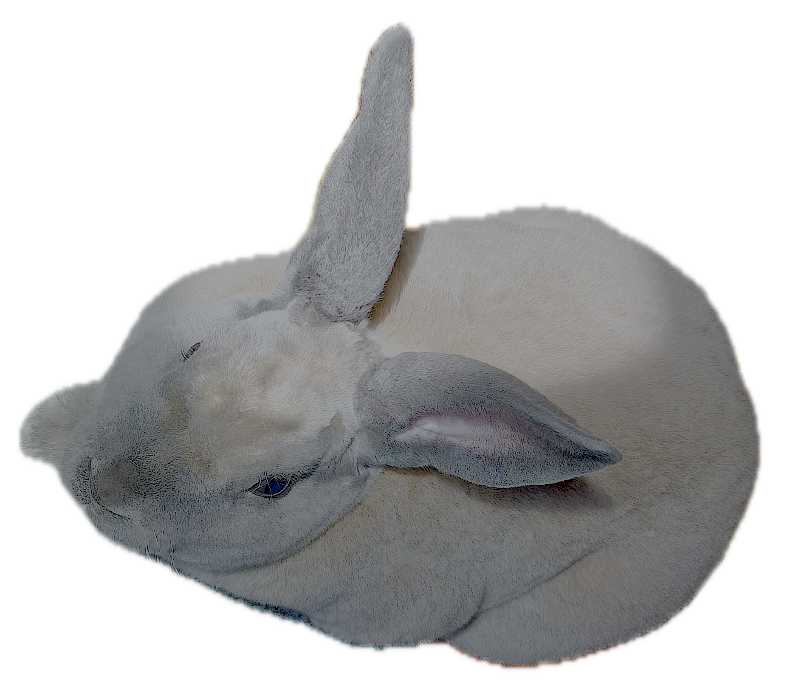

My Rabbits
Introducing... Nitro & Labubu

Nitro
- Netherland Dwarf rabbit.
- Named after the energy drink Monster Energy Nitro Super Dry.
- He would rather be appreciated from a distance.

Labubu
- Mini Rex rabbit.
- Named after the plush toys created by Kasing Lung.
- There is no amount of attention that would ever satisfy him.
They have similar hobbies.
- Running around really fast.
- Throwing their toys around.
- Being admired.
If you want to know more about their breeds...
The following Wikipedia pages about Netherland Dwarf rabbits and Mini Rex rabbits contain some helpful information:
Netherland Dwarf rabbit
Mini Rex rabbit